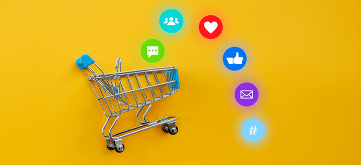

Social media is an inexpensive but effective way for businesses to attract customers, foster brand awareness, and build customer loyalty. Creating content that reflects your brand through messaging, graphic design, and jumping on the latest trends helps your audience to get to know you on a more personal level where they can interact and engage on the platform of their choosing.
Gearing up for the holidays, we have a few simple strategies to jazz up your social media and delight your followers. Make the most of your platform in Q4 with our easy to incorporate tips!
10 ways to maximize social media efforts in Q4
1. Influencer marketing
Partnering with a social media influencer can be a bit tricky, and it’s something that you’ll want to establish as soon as possible. First, you’ll want to find an influencer who matches your brand. If you sell outdoorsy gifts, aim to partner with a popular hiker or a travel influencer. If you sell charcuterie boards or other kitchen gadgets, strive to find a foodie or chef. Look for someone who fits your brand persona so that when they share your products, it will feel genuine.
There are different categories of influencers depending on how many followers they have, ranging from nano influencers to mega influencers. You can still see results by working with nano or micro influencers and sometimes it’s easier to start on a smaller scale while you build up your own audience. Once you’ve created a list of influencers who match your brand, establish a relationship with them. Follow them and engage with their content. From here, you can reach out with your pitch. Feel free to use this example…
Hi (name), we love your content! We came across your account and think we might be a good fit for a brand partnership. We’d like to send you a free (product) to share on your account if you’re interested. Thank you for your consideration!
Be prepared to get rejections or no response at all. Some influencers may require payment, especially if they have numerous followers. Determine beforehand if this is something you’re interested in or have the budget for, but don’t burn any bridges if you don’t. Influencer marketing can be a successful strategy to expose your brand to an audience who may not know about you yet and can help you to grow your audience or increase sales through social media.
2. Giveaways
Giveaways are excellent for increasing engagement and growing your audience organically. They also create excitement around any new product launch. To maximize your reach, have participants tag a friend or two as part of their entry, follow you if they aren’t already, and like the post. For bonus entries, have them share the post to stories and tag you so you can track it.
People love receiving free stuff. Since entering only requires a minute of their time, giveaways are an effective way to engage your audience and increase awareness.
3. Update your profile
As a best practice, there are basic scans of your profile that you should run every quarter, such as double-checking that all links are working or that your bios are accurate and refreshed. However, there are additional updates you can make during Q4 to really elevate your account. Consider adding a seasonal Instagram story highlight, updating your Facebook and Twitter headers, refreshing your pinned posts, or changing your profile picture to a holiday-theme that puts your brand in the festive spirit.
We highly suggest adding Linktree to your Instagram bio since Instagram limits bio links to one. By setting up and adding your Linktree URL to Instagram, it enables you to share multiple links that followers may need like a direct link to leave you a Google review on your Google Business Profile, your products page, where to sign up for your newsletter, popular pages of your website, featured articles, or even links to your other social accounts.
4. Increase video content
The rise of video content in recent years has skyrocketed. According to Vidyard…
Marketers claim to have a 34% increase in conversion rate if video content was added to their campaign.
When filming video content, be cautious of the 1080x1920px dimensions of stories, reels, and TikToks so that you can post the same video in multiple places. Reserve landscape videos for YouTube or main feed posts. Video content such as reels or TikToks also exposes your brand to a new audience by incorporating trending audios and hashtags. The reach potential on these videos can be a revelation for non-followers to discover you, become a follower, and turn into a loyal customer.
5. Hashtag research
Using relevant hashtags helps your content to be found and drives users to your account that can increase followers and overall engagement. Targeted hashtags open the door to a specific group of people who are searching for what you’re posting. You’ll want to include a diverse mix of both niche and popular hashtags in your content to make sure that you’re not getting lost in all the noise. Sprinkling a couple hashtags into your content is a great way to use hot trends and topics to your advantage.

6. Set up or refresh automated responses
If you don’t have automated messages set up, this is really simple to do through Facebook Business Suite. At a time when you can’t be at the computer to respond immediately when users reach out, sending an automated message lets them know that you have received their message and someone on your team will get back to them shortly.
You can even customize automated responses based on the question a user sends for a personalized experience. If your team does not work on the weekends or if you’ll be closed, it’s helpful to add this information into the message so followers know when they can expect a response.
7. Advertising
Boosting posts or creating ads on social media can be an excellent way to bring traffic to your website and to gain followers. Personally, I have purchased products from Instagram after scrolling through my feed and discovering something that interests me. I’m not alone. According to Socially Buzz…
28% of people who use the internet found new products after viewing social media ads.
Social media advertising is a budget-friendly alternative to other advertising platforms and can help you reach thousands of people. With detailed targeting, your brand will be placed in front of people who will benefit from your products.
8. Optimize your social commerce
According to Accenture, global social commerce sales are expected to reach $1.2 trillion by 2025. Is a social shop necessary? No. Will it help increase sales? Most likely. With a Facebook Shop you have the ability to tag products in your posts that can make the buying process easier for customers. It is important to note that Facebook deducts a ‘selling fee’ everytime you make a sale. The selling fee is 5% per shipment, or a flat fee of $0.40 for shipments of $8.00 or less that is automatically taken from your payout.
To optimize your shop, create compelling titles and product descriptions, add custom labels to your Facebook product feed, automatically update prices, and make sure you really showcase your products with high-quality pictures. Having a Facebook shop is a brilliant approach to market your business, promote your products, boost sales, and improve your bottom line since it makes sharing content incredibly simple.
9. Cross-channel marketing
Repurposing the same content for different platforms will save you time and energy. In your editorial calendar, it helps to create a section for each platform you’ll be posting on and then edit each copy or graphic, depending on where it will be posted. Your Facebook audience and Instagram audience may be similar, but small details (such as Facebook skewing an older crowd) can make a difference. Slightly alter your content for each platform so that it targets each specific audience to make the most of a content idea.
When running promotions or giveaways, pair social media content to match your email campaigns to grow one or the other. For example, if you’re announcing a new product launch for the holidays to your email audience, let your social followers know that to gain early access, they’ll need to be signed up for your newsletter. And vice versa, if you’re running a giveaway on social media, send an email campaign out letting subscribers know that they’ll need to enter on social media. This small effort will continually grow your audience on other platforms.
10. Schedule content
At a time when employees are expected to be taking more time off than usual, it can make things easier to schedule content ahead of time. After one (or two) sweeps over content for any grammatical errors and to make sure all information is relevant and up-to-date, using scheduling platforms like Hootsuite, HeyOrca, or even in the platform itself through Facebook Business Suite can ensure that content goes out exactly when you want it to.
Prepare for the holiday season with eCommerce support
Influx provides a variety of different services designed to scale your business. Our global teams take advantage of the ‘follow the sun model’ to provide efficient, 24/7 support. For an extra layer of support this holiday season, browse our support solutions to see how Influx can benefit you!